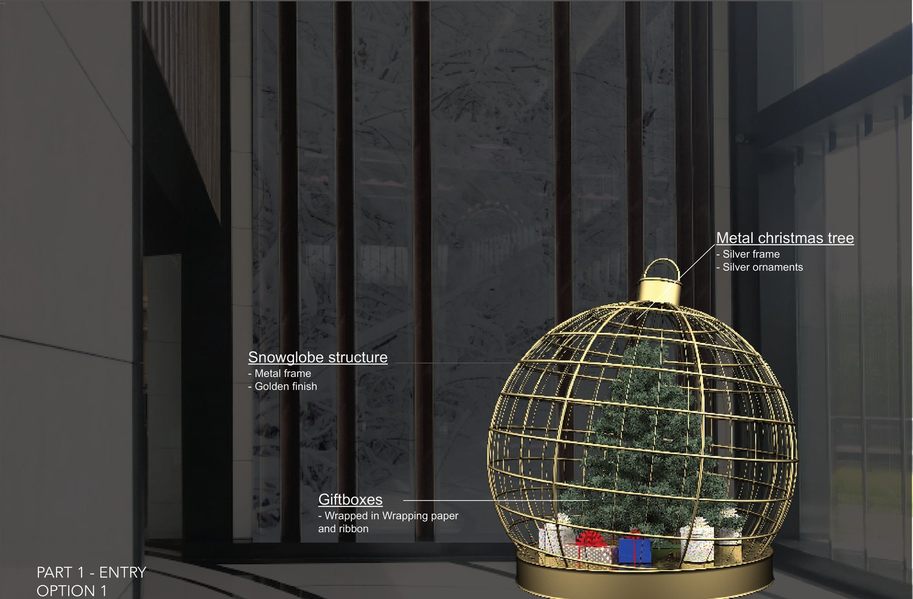
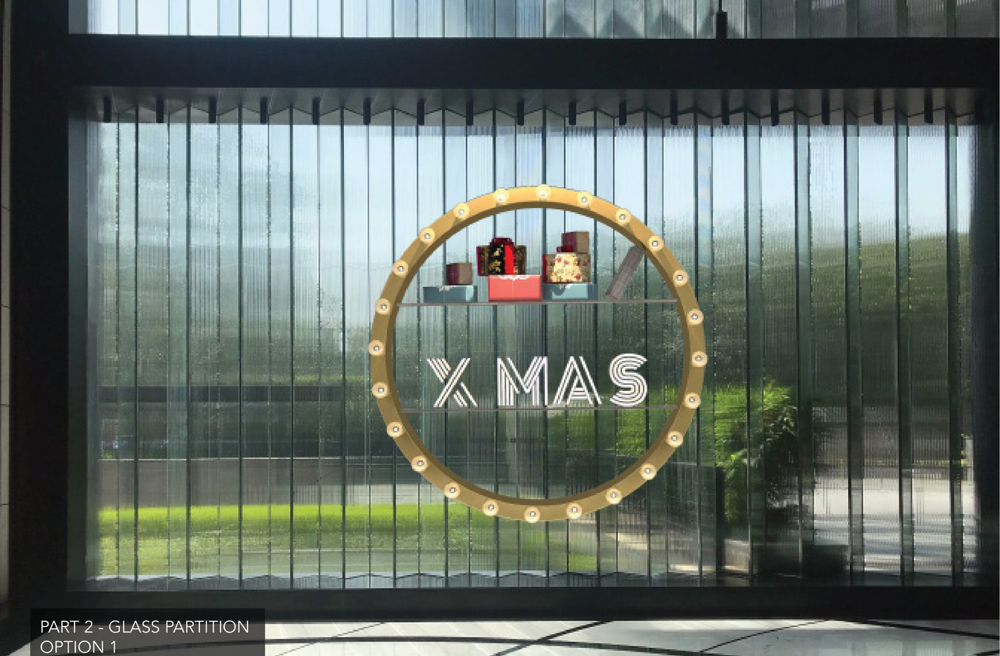
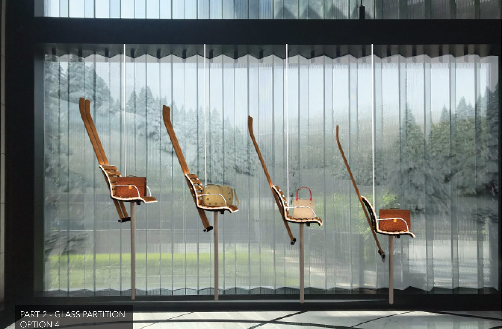

Festive installation concepts for the atrium of The Chanakya, a luxury destination in New Delhi — a spiral ornament tree, a giant suspended bauble, a gold "X·MAS" ring and a herd of line-drawn reindeer. Quiet, modern, expensive-feeling Christmas.
The Chanakya is a luxury retail destination, and its Christmas had to match — festive but restrained, warm but expensive. The brief was a set of installations for the atrium and glass partitions that read as Christmas at a glance without a single inflatable Santa.
The concepts work with light, gold and clean geometry, each rendered into the real space so the client could see them hang.



A tree made of light, not branches.
The centrepiece reimagines the Christmas tree as a rising spiral of ornaments and warm light, drawn up through the atrium void so it reads from every floor. No trunk, no plastic needles — just a luminous cone of baubles turning in the air.
Around it sits a family of pieces: a single oversized bauble against the glass, a gold "X·MAS" ring hung in the daylight of a partition, and a herd of fine line-drawn reindeer caught mid-leap across a wall. Each is its own moment; together they dress the whole building for the season.